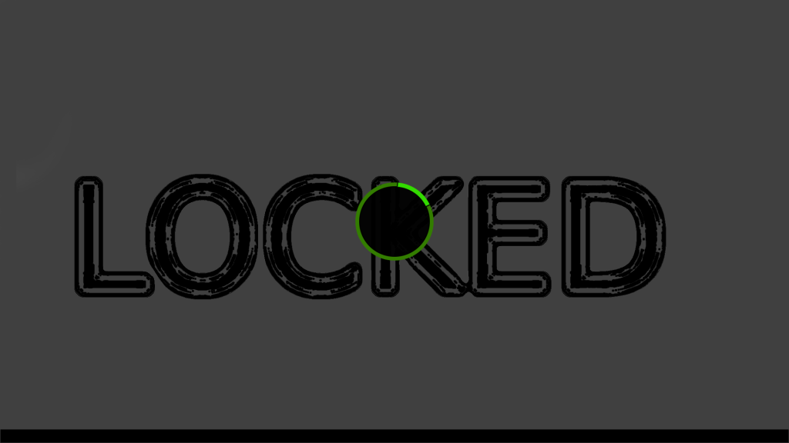
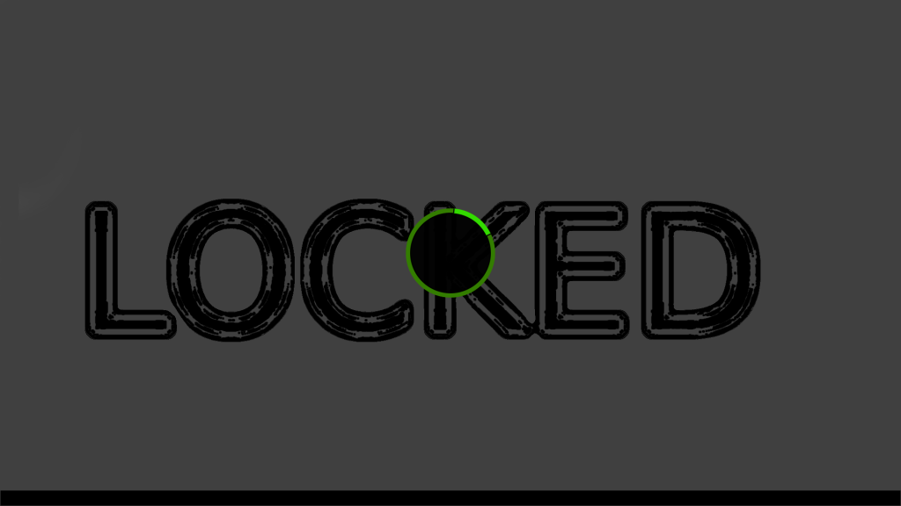

Por más medidas de seguridad que se tomen, si dejas una sesión abierta en el trabajo o en un lugar público y abandonas tu puesto, te expones a que cualquier persona en cuestión de segundos se haga con información sensible de tu sistema.
☰ TMOUT
TMOUT es una variable de entorno en Linux que permite definir el tiempo de inactividad en una sesión para cerrarla.
Si esta variable se configura a 10, la sesión se cerrará automáticamente a los 10 segundos de inactividad: TMOUT=10
Transcurridos 10 segundos:
CentOS Stream 8
Kernel 4.18.0-481.el8.x86_64 on an x86_64
CentOS8 login:
☰ VLOCK
Es un programa para bloquear una o más sesiones en la consola de Linux. Esto es especialmente útil para máquinas Linux que tienen múltiples usuarios con acceso a la consola
vlock: locks virtual consoles, saving your current session.
Usage: vlock [options]
Where [options] are any of:
Where [options] are any of:
-c or --current: lock only this virtual console, allowing user to
switch to other virtual consoles.
-a or --all: lock all virtual consoles by preventing other users
from switching virtual consoles.
-v or --version: Print the version number of vlock and exit.
-h or --help: Print this help message and exit.
La opción -c bloquea la sesión actual instantáneamente:
☰ I3LOCK
i3lock es un screen locker en modo gráfico. Cuando se ejecuta el comando i3lock, aparece un salvapantallas blanco totalmente maximizado y sin bordes.
Sin embargo, permite configurar el color de la pantalla de bloqueo e incluso elegir qué imagen quieres que se muestre durante el bloqueo.
Una vez activado i3locker, es necesario introducir la password del usuario para desbloquearlo. Al teclear la password verás una circunferencia verde iluminándose con cada tecla pulsada, algo parecido a esto: 
Sin embargo, permite configurar el color de la pantalla de bloqueo e incluso elegir qué imagen quieres que se muestre durante el bloqueo.
Una vez activado i3locker, es necesario introducir la password del usuario para desbloquearlo. Al teclear la password verás una circunferencia verde iluminándose con cada tecla pulsada, algo parecido a esto: 